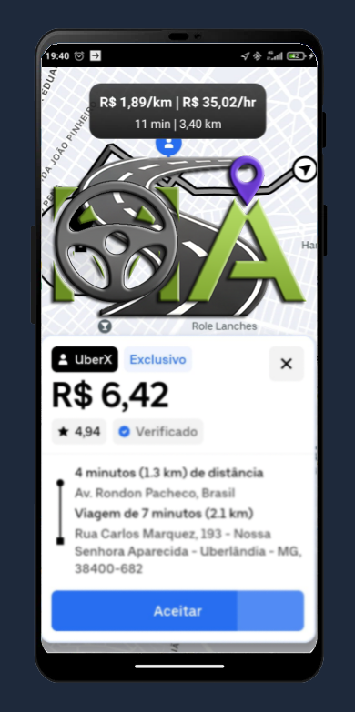

O APP que ajuda nos seus GANHOS.
Maximize seus lucros escolhendo a viagem certa e otimize cada quilômetro com o SMA App, a ferramenta essencial para o motorista de aplicativo moderno.
Principais Recursos
Gratuito (Sim, é de graça!)
Monitor de cálculo de ganho rápido (Decisões em segundos)
Leitura personalizada para o card da UberDriver (Foco no que importa)
